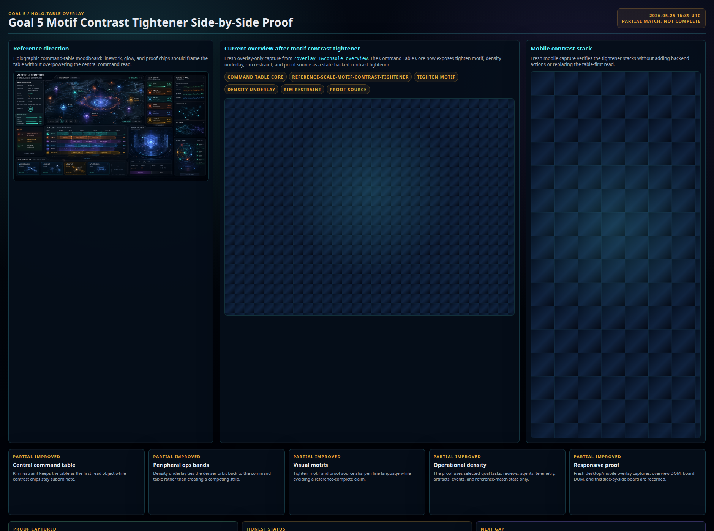
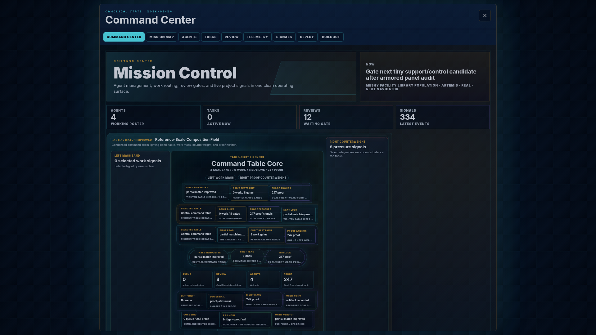
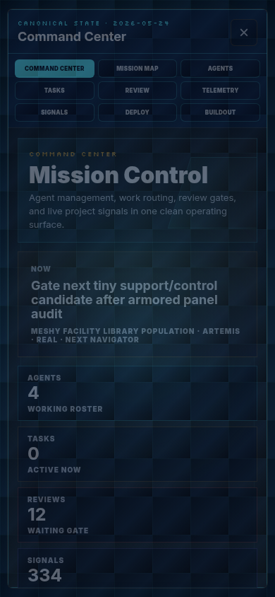

Reference direction
Holographic command-table moodboard: the central command table must remain the first read after motif and density passes.

Goal 5 / Holo-table overlay
Holographic command-table moodboard: the central command table must remain the first read after motif and density passes.
The latest board closed the motif-tightener proof step and left a choice between motif contrast, table hierarchy, and peripheral density.

Fresh overlay-only capture from ?overlay=1&console=overview. The next gap is table hierarchy around the motif-tightened Command Table Core.

Fresh mobile capture keeps the motif-tightened stack readable while the next pass focuses on table hierarchy.

The motif-tightened and density-rich field needs the table-first read sharpened again.
Motif contrast now has a tightener and fresh side-by-side proof recorded.
Density read already has a state-backed band and side-by-side proof recorded.
Decision is backed by the latest motif proof board plus fresh desktop/mobile overlay captures.
No reference-complete claim. This only records the next weak-point selection.
Tighten table hierarchy around the motif-tightened Command Table Core using selected-goal tasks, reviews, artifacts, events, and reference-match state only.